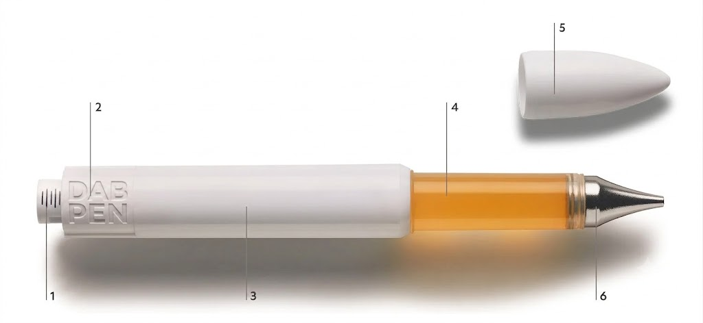
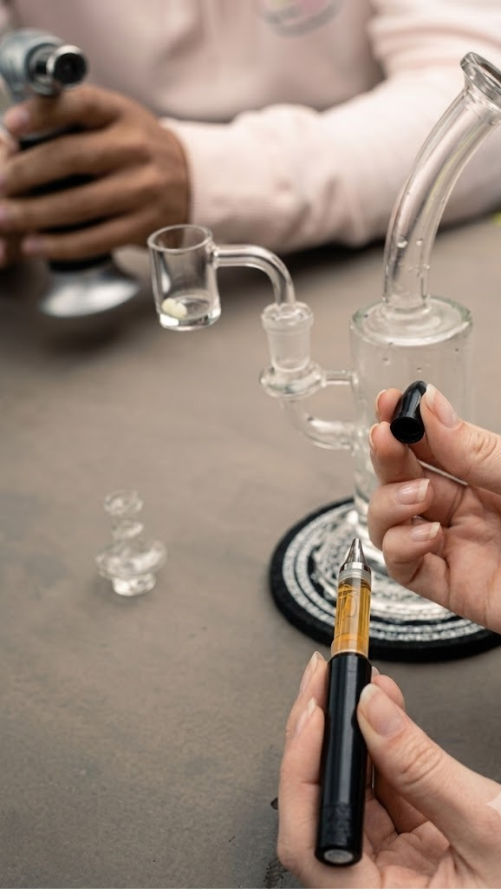
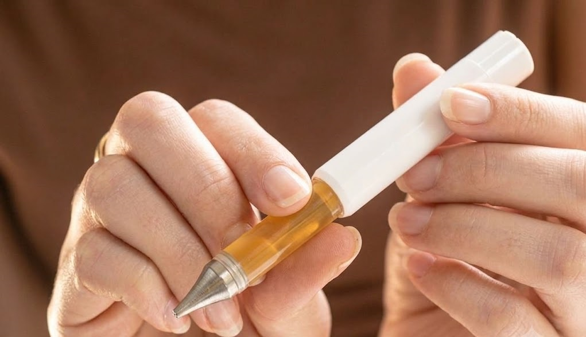
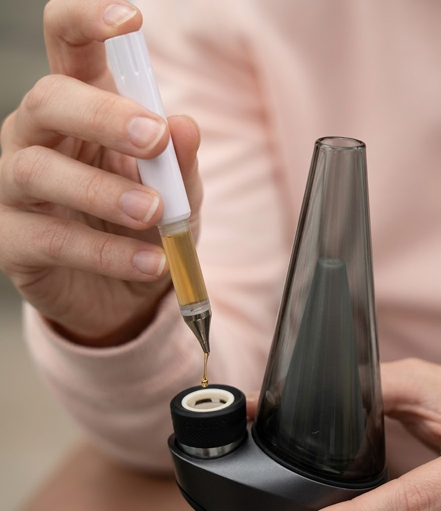
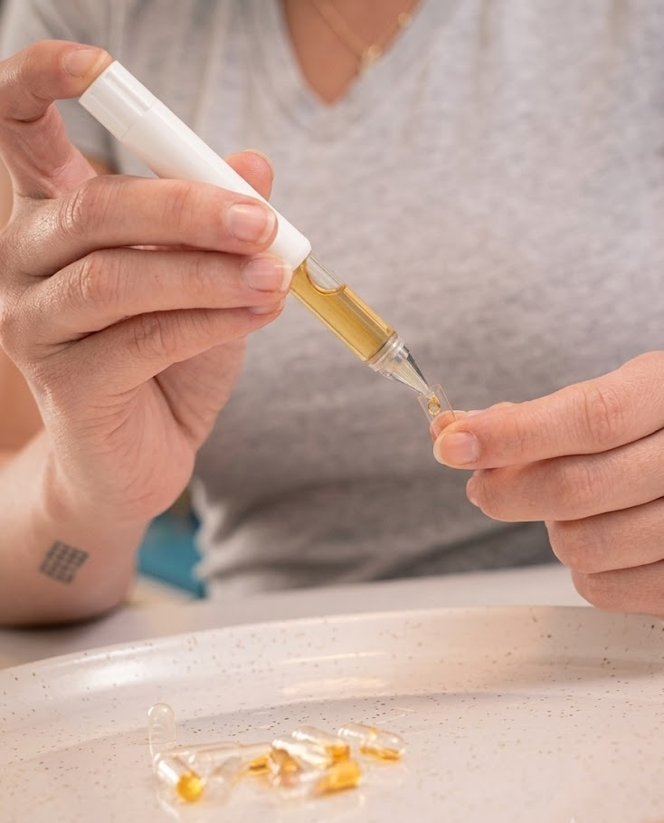
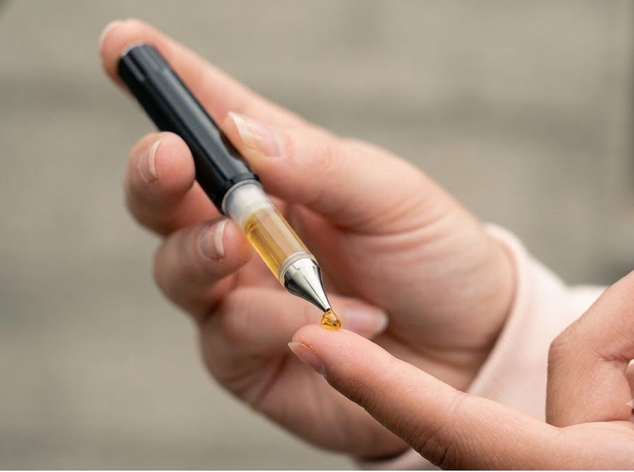
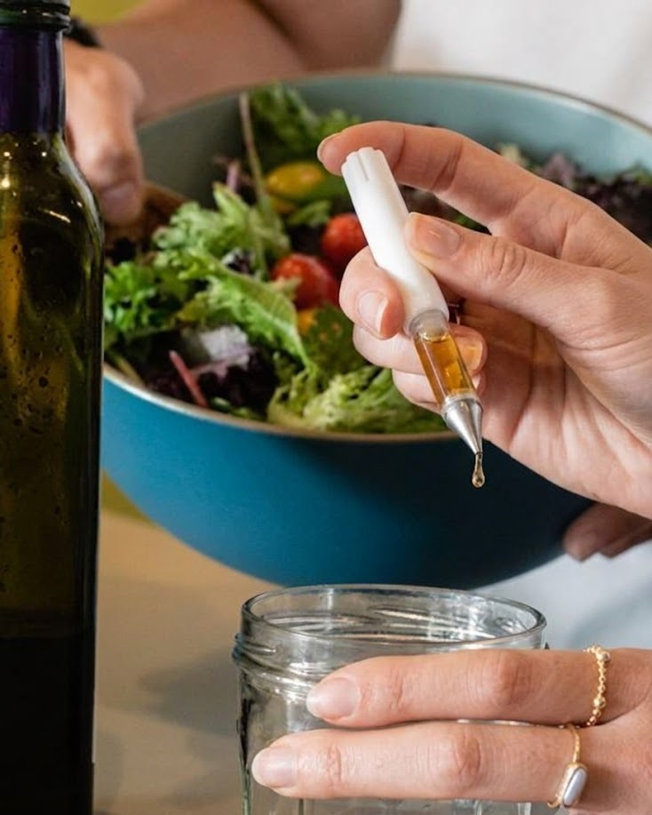
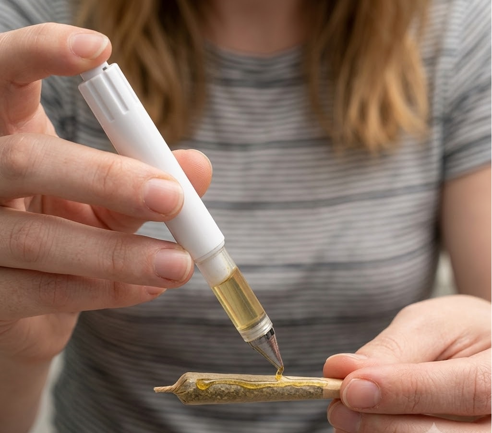

Dab. Infuse.
Twax.
Introduction & User Guide for the DabPen™ Oil Applicator — precision dosing for mess-free dabbing, infusing, and twaxing.
A precision oil applicator · 0.6mL · 1.2mL · 2.7mL · 4.2mL
Part 01 · Introduction
Meet the DabPen™
Oil Applicator
The DabPen™ Oil Applicator is a precision dosing tool for cannabis oil — built for mess-free, repeatable application whether you are dabbing, infusing food and drinks, or twaxing. Twist to your dose, push to dispense, and re-cap to lock in the oil.
- Twist the dosage selector to your line.
- Press the button on top to dispense the oil.
- Re-cap to preserve the oil and eliminate any chance of mess.
›Anatomy of the applicator

- Bi-directional twist-up dosage selector
- Twist and push for a repeatable dose, with 25mg dosing lines
- Area available for partner branding
- Shatter-resistant, BPA-free tank available in 0.6mL, 1.2mL, 2.7mL and 4.2mL sizes
- Brandable, snap-on cap that protects tip and prevents leakage
- Heat-resistant, metal Direct Dab Tip™ for direct application of oil
Part 02 · Dabbing
How to Dab in 2026
Dabbing techniques and tools
There are several things to consider when learning how to dab cannabis concentrates. Among other things, you should know where you can legally dab. You should also check your local laws and buy dab-specific tools. There are many resources on the web that can guide you through the process.
›What is dabbing?
Dabbing is a method of consuming cannabis concentrates that involves heating a “dab” of concentrate on a hot surface and inhaling the vapor. Dabbing is said to produce a more intense high versus other methods of consuming concentrates, such as smoking or using a vape pen.
›How to dab
There are several ways to dab, but the most common method is to use a “dab rig.” A dab rig looks similar to a bong, but it has a few key differences. First, dab rigs have a banger or nail instead of a bowl. The banger or nail is heated with a torch, and then the concentrate is placed on the hot banger or nail. The heat causes the concentrate to vaporize, and the user inhales the vapor through the dab rig. Also, dab rigs usually don’t have a water component like bongs.

›Alternatives to traditional dabbing
Several alternatives to traditional dabbing are available, the most popular being e-rigs and dab pens. E-rigs, or electric rigs, use electric power to heat a concentrate chamber, so users don’t have to use a blowtorch. As long as the e-rig is charged and the chamber is loaded, it can vaporize concentrate with the press of a button. Many models come with additional technical components, such as mobile apps for viewing your vaping data, controlling temperature and saving customized settings. If you want to dab on the go, portable dab pens function similarly to pre-filled vape cartridges. But dab pens typically have more options for temperature control, and the ability to fill (and re-fill) the chamber with your preferred concentrate. Using dab pens ultimately cuts down on waste from pre-filled carts and disposable vapes while giving the user more control over their vaping experience.

›Ideal temperature for dabbing
There are many different opinions on the ideal temperature for dabbing. Ultimately, the ideal temperature depends on the user and their personal preferences. Generally, lower temperatures will result in more flavor, less potency, less vapor, and a higher potential for leaving cannabis oil behind. Higher temperatures will result in less flavor, higher potency, and more vapor, with less wasted product. There are trade-offs between the two but many dabbers prefer low temperature dabs to taste their concentrate better and avoid burning their dabs.
Generally, low temperature dabs are between 300–450°F while high temperature dabs are between 450–600°F. If you’re not sure what you prefer, as with many things in cannabis, experiment with your dabs by starting low and bringing the temperature up until you find a nice safe dabbing point.
›Cleaning your rig with a pointed-tip cotton swab
Pointed-tip cotton swabs, like a pointed-tip Q-Tip, are some of the best tools for cleaning your dab rig. A dabbing best practice is to clean your banger or nail after every use. This prevents residue from affecting the quality of your next dab. Many people choose dabbing for its flavor, and cleaning with a pointed-tip cotton swab will ensure your next dab is fresh and flavorful.
Using a pointed-tip cotton swab is not a luxury, but it is an essential part of dabbing. This tool can keep your banger or nail clean, prevents your rig from getting clogged, and ensures you get the best possible taste from your concentrate. It will also allow you to dab at low temperatures to preserve flavor.
›Cold-start dabbing preserves terpenes
When dabbers want to retain terpenes, cold-start dabbing is the way to go. This technique preserves the terpenes in concentrates without altering their taste or potency. Cold-start dabbing uses a banger to evenly distribute the heat throughout the concentrate. These bangers can be made of quartz, ceramic, or thermal nail material. The banger should be clean and free from any debris or residue.
The benefits of cold-start dabbing are numerous. First, it preserves terpenes and cannabinoids more than traditional dabbing. Moreover, this method doesn’t generate a large amount of harshness and thick vapor clouds. It also allows dabbers to enjoy more of the terpenes in their concentrates.
›Dabbing tools
If you’re looking to start dabbing, one of the first things you’ll want to consider is the cost of your dab tools. It’s important to purchase high-quality equipment, so you’ll be able to enjoy your dabbing experience for many years to come. Look for dab rigs that are sturdy and quartz, titanium, or ceramic bangers or nails. E-rigs and portable dab pens are also great options. Look for e-rigs or dab pens with multiple temperature choices that are easy to clean. Cheaper dab rigs don’t last as long and will need to be replaced more often.

Dabbing tools come in a variety of shapes and sizes. The most common tools are the scoop and pick, but these do not provide consistent or easy dosing. With the DabPen™ Oil Applicator, everyone can dab easily and efficiently at home.
And the DabPen™ Oil Applicator isn’t only for dabbing. Whether you prefer to use oil for dabbing, infusing or twaxing, the DabPen™ Oil Applicator ensures you have a mess-free and repeatedly-dosed experience every time. Consumers and wholesalers can learn more about the DabPen™ Oil Applicator on our website.
Part 03 · Infusing
Infuse Food & Drinks
How to infuse food and drinks with THC using the DabPen™ Oil Applicator
There is lots to know before infusing edibles with cannabis oil. For instance, you can learn more about the lipid-soluble nature of cannabinoids, which bind to fats. You can also calculate how much THC will be contained in your infused oil or check out some recipes that incorporate different types of cannabis oil. Plus, learn how the DabPen™ Oil Applicator makes infusing easy, every time.
›Cannabinoids are lipid soluble
Cannabinoids are fat-soluble, which means they dissolve and break down in fats. They are extracted through distillation, winterizing, and butane systems. They are then delivered to the body through a carrier oil. Cannabinoids are also water-soluble, and therefore can be added to food and beverages.
Cannabinoids are naturally occurring chemical compounds found in the cannabis plant. They are also found in several other plant species. Aside from cannabis, other plant species containing phytocannabinoids include Echinacea purpurea, Acmella oleracea, Helichrysum umbraculigerum, and Radula marginata. These compounds are naturally lipid-soluble and have the ability to dissolve in water and lipids.
›Cannabinoids bind to fat
One of the questions posed by a cannabis oil product is how it binds to fat. Fat is a key component of the human body, and dietary fat helps to increase the bioavailability of cannabinoids. These compounds are absorbed into the bloodstream via the gastrointestinal tract and act on the body’s endocannabinoid system. The higher the bioavailability of cannabidiol, the more it is available to the body.
Cannabis oil binds to fat in the body, and the fat can metabolize it into THC. Fat is also a great storage space for cannabinoids, such as THC. It can remain stored in the body for weeks or even months. However, the release of THC from fat cells is so slow that it is unlikely to produce significant effects on the user.

›How to calculate potency of infused oil
A potency calculator is a handy tool when making homemade cannabis edibles or cannabis-infused things. It is not a replacement for lab testing, but it will give you an estimate of the potency of your infused items, such as butter or oil. It takes into account the losses from solvents, decarboxylation, and the oil extracted from cannabis.
First, calculate the amount of THC per serving. For example, if you want to make a batch of brownies, you would multiply the total THC content by the number of servings. If the recipe calls for four servings, then you would need to use five milligrams of THC per serving. You would also divide the amount of oil you want to use by the number of servings.
Once you know your dosing, the DabPen™ is the perfect solution for repeatable dosing, as the measuring lines provide a 25mg of oil measurement per line on the plunger.

›Recipes that use infused oil
If you’ve ever wanted to try cooking with marijuana, you’ll be excited to learn that you can create delicious recipes using cannabis oil and other cannabis-infused products. The first step is deciding what type of cannabis oil you’d like to use in your recipes. The next step is deciding how to apply.
The DabPen™ is a great option, because you can control your dose whether you’re infusing your tea, a treat or anything else! With the DabPen™ Oil Applicator, everyone can make their own potent pot creations at home. And the DabPen™ Oil Applicator is great for twaxing and infusing too! Whether you prefer to use oil for dabbing, infusing or twaxing, the DabPen™ Oil Applicator ensures you have a mess-free and precisely dosed experience every time.

Part 04 · Twaxing
Twaxing 101
Things to consider when learning how to twax
Legalization has greatly expanded the hemp and cannabis community and the ways we all use the plant. With those changes also come new vocabulary to learn, and we’ve got another one for your cannabis lexicon: “twaxing” is the new word on the weed street. You might not recognize the word, but you probably already have experience performing the action it describes.
›What is twaxing?
Twaxing, a verb, is when you add any cannabis concentrate(s) to your joints, pipes or bongs, smoking the concentrate alongside regular flower. It can be mixed inside with flower or soaked, coated and dusted on the outside of joints.
Since concentrates can come in a variety of forms, from powdery kief to viscous oil to crystallized shatter, twaxing lets smokers express their creativity — while getting some supercharged hits, of course. Some of the most skilled twaxxers can create elaborate designs in oil or wax around the outside of their joints. Others take pride in mixing concentrates to create the most potent bowls and rolls imaginable.
›How to twax
Twaxing is a free art form. The only rule is the final product still needs to burn. Otherwise, your twax design can take whatever form and use whichever blend of concentrates and flower you desire.
However, due to the varying consistencies of different concentrates, each kind has to be handled in a specific way, or has to be prepared before it can be mixed with flower. Keep reading for twaxing instructions for specific concentrates:

›Twaxing with kief
Kief consists of the trichome crystals from the cannabis plant. In plain language? It’s the green dust that falls off your bud. You might have seen it at the bottom of your grinder? Kief is rich in THC and burns well, which makes it a great addition to any joint or bowl. You can mix it in with the flower or dust it on top. The downside is that, because the powder is so fine, kief can get quite messy. It’s truly the glitter of the cannabis plant — once it spills, you’ll never get it totally cleaned up.
›Twaxing with shatter
Shatter is one of the hardest concentrates, with a consistency similar to hard candy. Shatter has to be carefully heated with a dab pen and torch or hot knife in order to be malleable enough to place in the center or outside of a joint. If you just put unheated shatter into a joint, your lighter won’t be hot enough to burn it. With all these blazing hot tools needed to add just a smidge of shatter to a bowl, twaxing with shatter is one of the most difficult ways to twax.
›Twaxing with the DabPen™ Oil Applicator
Using oils with a viscous consistency can make twaxing a messy challenge, but the DabPen™ Oil Applicator makes twaxing all types of cannabis oil easy! There’s no prep required before you add the concentrate to your infusions, joints, carts, or pipes, and no loose kief that can get everywhere. With a simple twist, click, and push, you’ll be twaxing in no time — you can try one out today, with brand partners across the country, like Cresco, Columbia Care, Jetty Extracts, and more.
›Twaxing the outside of a joint or blunt
With the DabPen™ Oil Applicator, anyone can be a twaxing artist. To create patterns and designs on the exterior of your joint or blunt, just follow these instructions. Roll your joint or blunt and seal it — but wait, don’t smoke yet!
- Remove the cap from the DabPen™ Oil Applicator, then twist the pen to your desired dose.
- Press the button on top of the applicator to dispense the oil.
- With the applicator in one hand and the joint or blunt in the other, draw patterns like criss-crosses and spirals, or freehand your own design. The oil will adhere to the outside of the wrap.
- Re-cap the applicator to preserve the oil and eliminate any chance of mess.
- Let your design harden for a moment — the ideal time to take a pic for the gram, so others can admire your creative genius.
›Twaxing the inside of a joint or blunt
Interior twaxing is less showy than exterior twaxing, but just as potent (and maybe a little easier) — a great way to make your own infused joint or pre-roll. To twax the inside of a joint or blunt, just follow these instructions:
- Lay out your paper or wrap and fill with one layer of ground flower.
- Remove the cap from the DabPen™ Oil Applicator, then twist the pen to your desired dose. Press the button on top of the applicator to dispense the oil in a line (or multiple lines) on top of the flower.
- Re-cap the applicator to preserve the oil and eliminate any chance of mess.
- Cover the oil with another layer of flower, then roll it up. Your twaxed joint or blunt is ready to smoke.
The DabPen™ Oil Applicator
Mess-free.
Repeatable.
Every time.
Whether you prefer to use oil for dabbing, infusing or twaxing, the DabPen™ Oil Applicator ensures a mess-free and precisely dosed experience — every time.
Dabbing · Infusing · Twaxing
0.6mL · 1.2mL · 2.7mL · 4.2mL
Bi-directional twist-up selector with dosing lines
Heat-resistant metal Direct Dab Tip™
For education and product guidance only. Check your local laws before purchasing or using cannabis products, and keep all cannabis products out of the reach of children and pets.